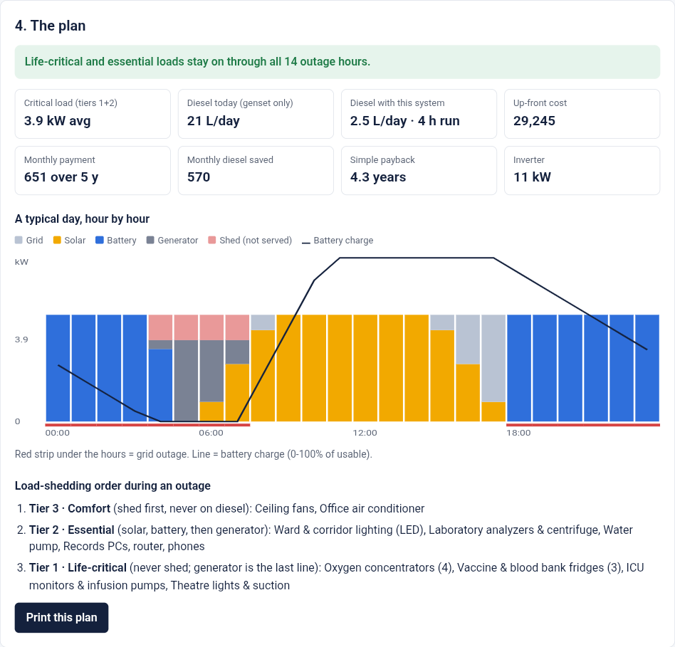

Anneru Global Energy Hackathon 2026 · Availability · Digital Solutions, Apps & AI/ML Tools · Non-residential (healthcare)
Tiered solar, battery and generator plans that keep a hospital's life-critical loads on through 8 to 20 hours of daily grid outage.
Nigerian hospitals lose grid power 8-20 hours a day. Most run every load on one diesel genset for every outage hour: high fuel cost, dependence on fuel supply, and a single point of failure for oxygen, vaccine fridges and ICU equipment.
All 8 stress cases keep tiers 1-2 on; diesel 0-4.4 L/day; only comfort load is shed.

Alan De Bortolo, founder, Design Master Solutions LLC (solo). Repository started Oct 29, 2026, 22:06 EDT. Built with Claude Code as coding assistant; no third-party code or datasets. Prices are editable planning assumptions, not quotes.
Live: hospital-uptime.designmaster.workers.dev · Code (MIT): github.com/DesignMaster-Solutions/hospital-uptime · Demo: see submission